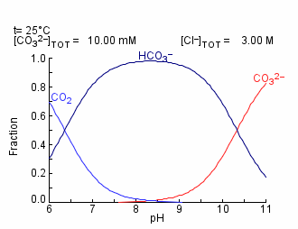
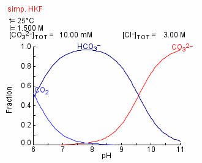
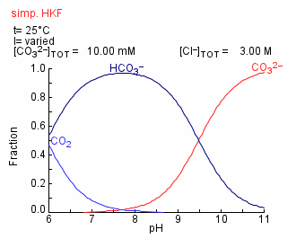
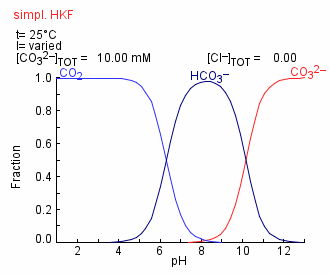
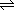
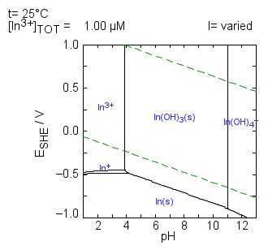
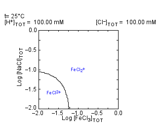
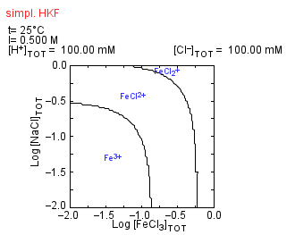
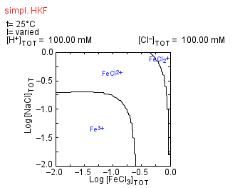

pH in the X-axis
The chemical system H+, CO32−,
Cl− is used to create diagrams
using the simplified HKF model to
illustrate the effect of different options for the
ionic strength when making a diagram.
|
|
Ionic strength fixed = 0

|
|
Ionic strength fixed = 1.5

|
|
Ionic strength calculated

|
|
For this diagram, where the ionic strength is calculated, electroneutrality
is assumed, and the large concentration of chloride is compensated by
a fictive equivalent amount of positive ions (for example sodium), so
that the calculated ionic strength
is in this case ≈ 3 all over.
|
|
Ionic strength calculated, pH = 1 to 13

|
|
In this diagram [Cl−] = 0.
- The calculated ionic strength
at the left of the diagrapm (pH = 1) is ≈ 0.13
(because at pH = 1, [H+] ≈ 0.1, electroneutrality is assumed).
- At pH = 7 the calculated ionic strength is 0.008 (at pH = 7, [H+] ≈ 10−7).
- At pH = 13, I ≈ 0.16 ([OH−] = 0.13,
electroneutrality is assumed).
|
| | |
Purbaix diagrams
A Pourbaix diagram is a Eh-pH
predominance area diagram, see Example 10. If
the ionic strength is calculated,
large variations occur, as in the diagram between pH 1 and 13 shown above for
CO32−.
Furthermore, large concentrations of O2(aq) and of H2(aq)
are calculated:
| |
2 H2O

+ O2(aq)
+ 4 e− + 4 H+ |
|
log K° ≈ −86 ≈ log[O2(aq)] − 4 pH − 4 pe |
| |
2 H+ + 2 e−
H2(aq) |
|
log K° ≈ −3.1 = log[H2(aq)] + 2 pH + 2 pe |
At Eh = +1 V, pe = +16.9,
and [O2(aq)] becomes ≈ 10+33.6 at pH = 13.
Similarly, at Eh = −1 V, pe = −16.9,
and [H2(aq)] becomes ≈ 10+28.7 at pH = 1.
Such large concentrations of O2(aq) and of H2(aq)
are physically impossible.
|
|
Ionic strength calculated

|
|
In a Pourbaix diagram the dashed lines indicate the equilibrium at
1 bar pressure between H2O and
either O2(g) (upper dashed line) or
H2(g) (lower dashed line). Above the upper dashed line
impossibly large concentrations of O2(aq) are
obtained, and likewise, below the lower dashed line
impossible concentrations of H2(aq) are calculated.
|
Predominance area diagrams
The chemical system H+, Na+, Cl−, Fe3+
was modified in SPANA to
exchange components for reactions,
in this case Na+ was exchanged for NaCl
and Fe3+ for FeCl3.
In this way electrically neutral components may be used in the axes of
the diagram. The crystalline oxides of Fe(III) are removed to simulate
a system where aqueous solutions are mixed in a laboratory experiment.
The concentration of H+ is large enough to prevent
the precipitation of amourphous Fe(III) hydroxides (remember that
amorphous solids are more soluble than crystalline.)
The following diagrams use the simplified HKF model,
and they illustrate the effect of different options for the
ionic strength when making a diagram:
|
|
Ionic strength fixed = 0

|
|
Ionic strength fixed = 0.5

|
|
Ionic strength calculated

|
|
Because the components in the axis are electrically neutral,
and a background concentration of HCl = 0.1 is
given, electroneutrality prevails all over the diagram.
The calculated ionic strength
at the bottom left of the diagram is ≈ [HCl],
that is, ≈ 0.1,
while at the top-right corner the ionic strength is controlled
by the high concentration of NaCl and FeCl3,
and by the complex formation, I ≈ 3.5.
|